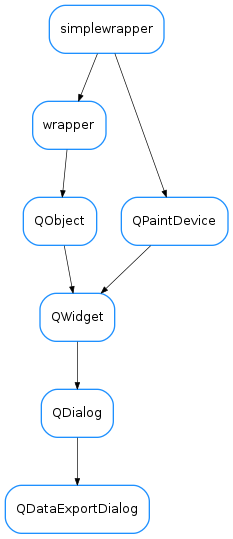

QDataExportDialog¶

-
class
QDataExportDialog(parent=None, datadict=None, sortedNames=None)[source]¶ Bases:
PyQt4.QtGui.QDialogThis creates a Qt dialog for showing and exporting x-y Ascii data from one or more curves The data sets are passed (by calling setDataSets() or at instantiation time) as a dictionary:
datadict={name:(x,y),...}
where name is the curve name and x,y are iterable containers (e.g., lists, tuple, arrays...) of data to be exported
@TODO: It would be nice if the textedit scrolled to the start *also for the first set loaded*
-
allInMultipleFiles= 'All set in multiple files'¶
-
allInSingleFile= 'All sets in a single file (table like)'¶
-
exportAllData(preffix=None)[source]¶ Exports all sets using a common preffix and appending ‘XXX.dat’, where XXX is a number starting at 001 if preffix is not given, the user is prompted for a directory path
-
exportCurrentData(set=None, ofile=None, verbose=True, AllowCloseAfter=True)[source]¶ Exports data Arguments: set: the curve name. If none is passed, it uses the one selected by dataSetCB ofile: output file name or file handle. It will prompt if not provided verbose: set this to False to disable information popups AllowCloseAfter: set this to false if you want to ignore the checkbox in the dialog
-
loadUi(filename=None, path=None)¶
-